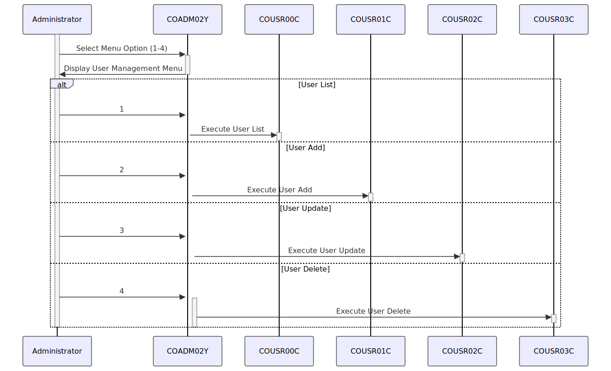

Gerado em: 1º de outubro de 2024
Título do Documento: Aplicativo CardDemo - Especificação do Menu Administrativo de Gerenciamento de Usuários
Descrição Resumida: Este documento descreve as especificações para o menu administrativo “User Management” (Gerenciamento de Usuários) dentro do aplicativo CardDemo. Este menu é um componente crítico da estrutura de segurança do sistema, fornecendo ao pessoal autorizado ferramentas para gerenciar contas de usuário e suas permissões associadas.
Histórias do Usuário: Como administrador do sistema, preciso gerenciar contas de usuário para controlar o acesso a dados confidenciais e funcionalidades dentro do aplicativo CardDemo.
Epic Relacionado: 6 - Gerenciamento de Usuários e Segurança
Requisitos Técnicos:
1 - COUSR00C (User List)2 - COUSR01C (User Add)3 - COUSR02C (User Update)4 - COUSR03C (User Delete)CDEMO-ADMIN-OPT-COUNT: Uma variável numérica contendo o número total de opções de menu (4).CDEMO-ADMIN-OPTIONS-DATA: Uma estrutura de dados contendo informações sobre cada opção de menu:
CDEMO-ADMIN-OPT-NUM: Identificador numérico para a opção de menu (1-4).CDEMO-ADMIN-OPT-NAME: Nome descritivo da opção de menu (por exemplo, ‘User List (Security)’).CDEMO-ADMIN-OPT-PGMNAME: O nome do subprograma COBOL associado à opção de menu (por exemplo, ‘COUSR00C’).Modelos Relacionados:
CDEMO-ADMIN-OPTIONS:
CDEMO-ADMIN-OPT-NUM: IntegerCDEMO-ADMIN-OPT-NAME: StringCDEMO-ADMIN-OPT-PGMNAME: StringConfigurações:
4Melhorias de Código:
Melhorias de Segurança:
Diagrama Conceitual:
–Made by “Smart Engineering” (by Compass.UOL)–